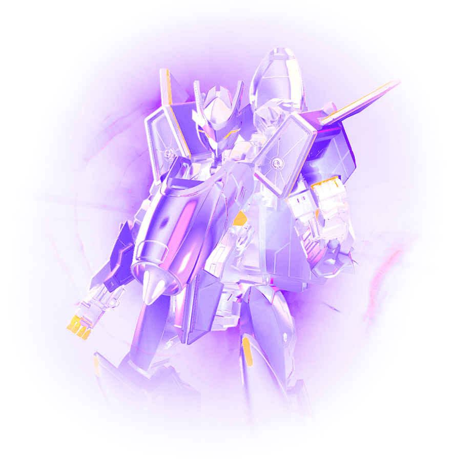
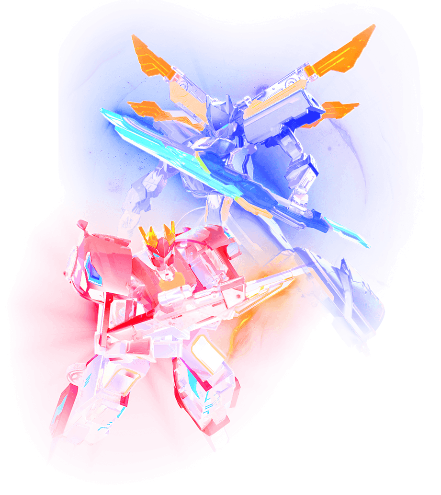

ABOUT

We are
Creature Hunters
Creature Hunters
About Us
Creature Hunters is a blockchain & AR powered
gaming & entertainment company that strives to
create innovative gaming platforms.

Creature Hunter's
WEB3 network
WEB3 network
Building a Community
Creature Hunters have pubished its own IPs and game,
inviting game enthusiasts and fans to build their own
community withing Creature Hunter's WEB3 network.